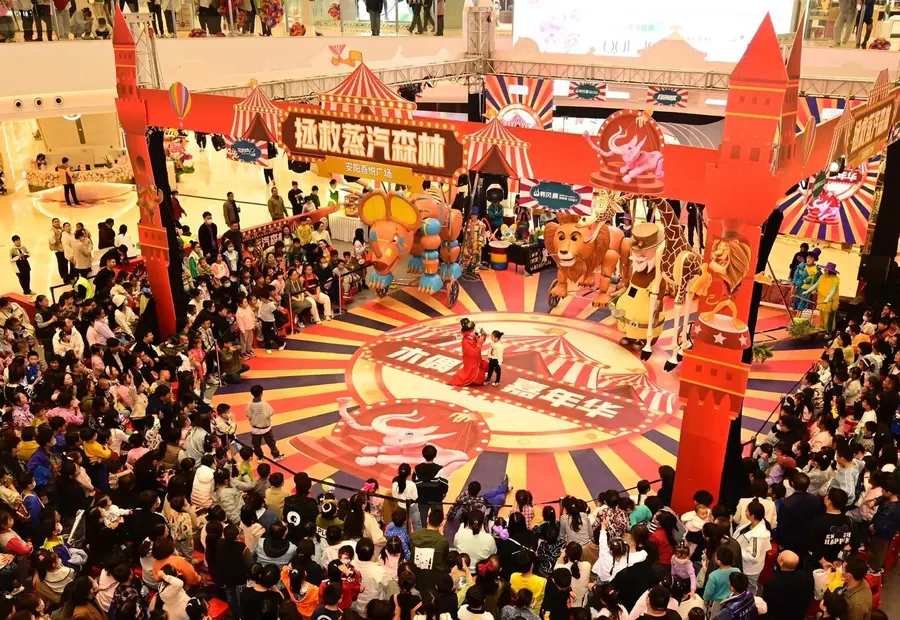

先确定漫画展的核心目的
不同客户做漫画展定制，目标并不完全一样。主办方更关注客流、动线和票务转化，品牌方更关注曝光、互动和社交传播，商场更关注中庭聚客和消费转化。彩云端定制通常会先确认活动城市、场地面积、目标人群、预算区间、IP调性和交付时间，再判断应该重点投入在展台搭建、COS服装、互动道具还是舞台演出。
展台和道具要服务动线
动漫展台搭建不只是做一个背景板。入口门头、拍照打卡点、商品陈列区、舞台区、演员出入口、观众排队区都需要提前规划。大型道具和机甲装置要考虑运输尺寸、安装方式、承重结构和现场安全距离。互动道具最好围绕角色故事展开，让观众可以自然参与，而不是只停留在“摆拍”。
COS服装要兼顾还原和表演
很多漫画展客户会提供角色原画，但原画并不等于可穿戴方案。COS服装定制需要拆解肩部、腰部、腿部、头饰和武器配件的结构，确认演员是否要长时间巡游、跳舞、站台或合影。高还原视觉和穿戴安全之间要做平衡，尤其是机甲、兽装和大型头套类服装。
适合提前准备的资料
- 角色设定图、三视图、品牌色和参考案例。
- 场地平面图、展位尺寸、层高和进场限制。
- 活动日期、搭建撤展时间和是否需要现场执行人员。
- 服装数量、演员身高范围、道具尺寸和预算区间。
结语
真正有转化力的漫画展定制，是把视觉、工艺、动线和传播一起设计。彩云端定制位于广东东莞，能够围绕漫画展、动漫嘉年华、商场IP活动和文旅演艺项目提供从创意设计到生产交付的一站式服务。